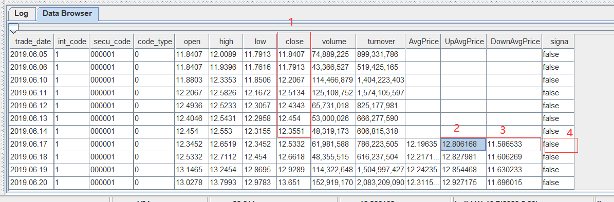
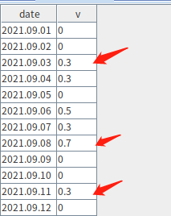
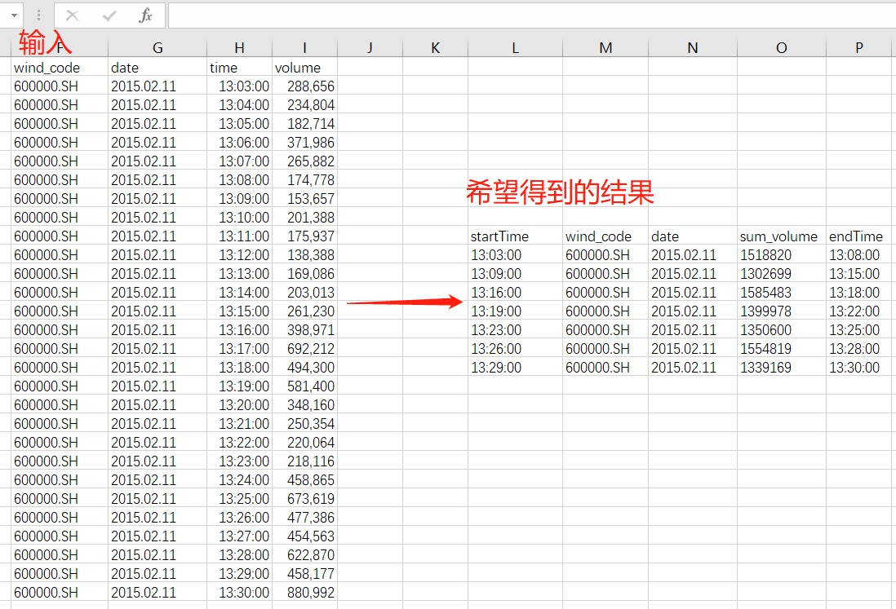

函数化编程案例
DolphinDB 支持函数化编程：函数对象可以作为高阶函数的参数。这提高了代码表达能力，简化了代码，复杂的任务可以通过一行或几行代码完成。
本教程介绍了一些常见场景下的函数化编程案例，重点介绍 DolphinDB 的高阶函数及其使用场景。
1. 数据导入
1.1. 整型时间转化为 TIME 格式并导入
CSV 数据文件中常用整数表示时间，如“93100000”表示“9:31:00.000”。为了便于查询分析，建议将这类数据转换为时间类型，再存储到 DolphinDB 数据库中。
针对这种场景，可通过 loadTextEx 函数的 transform 参数将文本文件中待转化的时间列指定为相应的数据类型。
本例中会用到 CSV 文件 candle_201801.csv，数据样本如下：
symbol,exchange,cycle,tradingDay,date,time,open,high,low,close,volume,turnover,unixTime
000001,SZSE,1,20180102,20180102,93100000,13.35,13.39,13.35,13.38,2003635,26785576.72,1514856660000
000001,SZSE,1,20180102,20180102,93200000,13.37,13.38,13.33,13.33,867181
......建库
用脚本创建如下分布式数据库（按天进行值分区）：
login(`admin,`123456) dataFilePath="/home/data/candle_201801.csv" dbPath="dfs://DolphinDBdatabase" db=database(dbPath,VALUE,2018.01.02..2018.01.30)建表
下面先通过
extractTextSchema函数获取数据文件的表结构。csv 文件中的 time 字段被识别为整型。若要将其存为 TIME 类型，可以通过 update 语句更新表结构将其转换为 TIME 类型，然后用更新后的表结构来创建分布式表。该分布式表的分区列是 date 列。schemaTB=extractTextSchema(dataFilePath) update schemaTB set type="TIME" where name="time" tb=table(1:0, schemaTB.name, schemaTB.type) tb=db.createPartitionedTable(tb, `tb1, `date);这里通过
extractTextSchema获取表结构。用户也可以自定义表结构。导入数据
可以通过自定义函数 i2t 对时间列 time 进行预处理，将其转换为 TIME 类型，并返回处理后的数据表。
def i2t(mutable t){ return t.replaceColumn!(`time, t.time.format("000000000").temporalParse("HHmmssSSS")) }请注意：在自定义函数体内对数据进行处理时，请尽量使用本地的修改（以！结尾的函数）来提升性能。
调用
loadTextEx函数导入 csv 文件的数据到分布式表，这里指定transform参数为i2t函数，导入时会自动应用i2t函数处理数据。tmpTB=loadTextEx(dbHandle=db, tableName=`tb1, partitionColumns=`date, filename=dataFilePath, transform=i2t);查询数据
查看表内前 2 行数据，可以看到结果符合预期。
select top 2 * from loadTable(dbPath,`tb1); symbol exchange cycle tradingDay date time open high low close volume turnover unixTime ------ -------- ----- ---------- ---------- -------------- ----- ----- ----- ----- ------- ---------- ------------- 000001 SZSE 1 2018.01.02 2018.01.02 09:31:00.000 13.35 13.39 13.35 13.38 2003635 2.678558E7 1514856660000 000001 SZSE 1 2018.01.02 2018.01.02 09:32:00.000 13.37 13.38 13.33 13.33 867181 1.158757E7 1514856720000
完整代码如下：
login(`admin,`123456)
dataFilePath="/home/data/candle_201801.csv"
dbPath="dfs://DolphinDBdatabase"
db=database(dbPath,VALUE,2018.01.02..2018.01.30)
schemaTB=extractTextSchema(dataFilePath)
update schemaTB set type="TIME" where name="time"
tb=table(1:0,schemaTB.name,schemaTB.type)
tb=db.createPartitionedTable(tb,`tb1,`date);
def i2t(mutable t){
return t.replaceColumn!(`time,t.time.format("000000000").temporalParse("HHmmssSSS"))
}
tmpTB=loadTextEx(dbHandle=db,tableName=`tb1,partitionColumns=`date,filename=dataFilePath,transform=i2t);注：关于文本导入的相关函数和案例，可以参考 数据导入教程
1.2. 有纳秒时间戳的文本导入
本例将以整数类型存储的纳秒级数据导入为 NANOTIMESTAMP 类型。本例使用文本文件 nx.txt，数据样本如下：
SendingTimeInNano#securityID#origSendingTimeInNano#bidSize
1579510735948574000#27522#1575277200049000000#1
1579510735948606000#27522#1575277200049000000#2
...每一行记录通过字符'#'来分隔列，SendingTimeInNano 和 origSendingTimeInNano 用于存储纳秒时间戳。
建库建表
首先定义分布式数据库和表，脚本如下：
dbSendingTimeInNano = database(, VALUE, 2020.01.20..2020.02.22); dbSecurityIDRange = database(, RANGE, 0..10001); db = database("dfs://testdb", COMPO, [dbSendingTimeInNano, dbSecurityIDRange]); nameCol = `SendingTimeInNano`securityID`origSendingTimeInNano`bidSize; typeCol = [`NANOTIMESTAMP,`INT,`NANOTIMESTAMP,`INT]; schemaTb = table(1:0,nameCol,typeCol); db = database("dfs://testdb"); nx = db.createPartitionedTable(schemaTb, `nx, `SendingTimeInNano`securityID);上述脚本创建了一个 组合分区 的数据库，然后根据文本的字段和类型创建了表 nx。
导入数据
导入数据时，使用函数
nanotimestamp，将文本中的整型转化为 NANOTIMESTAMP 类型：def dataTransform(mutable t){ return t.replaceColumn!(`SendingTimeInNano, nanotimestamp(t.SendingTimeInNano)).replaceColumn!(`origSendingTimeInNano, nanotimestamp(t.origSendingTimeInNano)) }最终通过
loadTextEx导入数据。
完整代码如下：
dbSendingTimeInNano = database(, VALUE, 2020.01.20..2020.02.22);
dbSecurityIDRange = database(, RANGE, 0..10001);
db = database("dfs://testdb", COMPO, [dbSendingTimeInNano, dbSecurityIDRange]);
nameCol = `SendingTimeInNano`securityID`origSendingTimeInNano`bidSize;
typeCol = [`NANOTIMESTAMP,`INT,`NANOTIMESTAMP,`INT];
schemaTb = table(1:0,nameCol,typeCol);
db = database("dfs://testdb");
nx = db.createPartitionedTable(schemaTb, `nx, `SendingTimeInNano`securityID);
def dataTransform(mutable t){
return t.replaceColumn!(`SendingTimeInNano, nanotimestamp(t.SendingTimeInNano)).replaceColumn!(`origSendingTimeInNano, nanotimestamp(t.origSendingTimeInNano))
}
pt=loadTextEx(dbHandle=db,tableName=`nx , partitionColumns=`SendingTimeInNano`securityID,filename="nx.txt",delimiter='#',transform=dataTransform);2. Lambda 表达式
在 DolphinDB 中可以使用命名函数或匿名函数（通常为 lambda 表达式）来创建自定义函数。例如：
x = 1..10
each(x -> x + 1, [1, 2, 3])在这个例子中使用了一个 lambda 表达式（x -> x + 1, [1, 2, 3]）作为高阶函数 each 的参数，其中，该 lambda 表达式接受一个输入 x 并返回 x + 1。它与 each 函数一起使用的结果是，将 1 添加到数组 [1, 2, 3] 中的每个元素。
后续章节将介绍其他 lambda 函数案例。
3. 高阶函数使用案例
3.1. cross 使用案例
3.1.1. 将两个向量或矩阵，两两组合作为参数来调用函数
cross 函数的伪代码如下：
for(i:0~(size(X)-1)){
for(j:0~(size(Y)-1)){
result[i,j]=<function>(X[i], Y[j]);
}
}
return result;以计算协方差矩阵为例，一般需要使用两个 for 循环计算。代码如下：
def matlab_cov(mutable matt){
nullFill!(matt,0.0)
rowss,colss=matt.shape()
msize = min(rowss, colss)
df=matrix(float,msize,msize)
for (r in 0..(msize-1)){
for (c in 0..(msize-1)){
df[r,c]=covar(matt[:,r],matt[:,c])
}
}
return df
}以上代码虽然逻辑简单，但是冗长，表达能力较差，且易出错。
在 DolphinDB 中可以使用高阶函数 cross 或 pcross 计算协方差矩阵：
cross(covar, matt)3.1.2. 计算股票两两之间的相关性
本例中，我们使用金融大数据开放社区 Tushare 的沪深股票 日线行情 数据，来计算股票间的两两相关性。
首先我们定义一个数据库和表，来存储沪深股票日线行情数据。相关语句如下：
login("admin","123456")
dbPath="dfs://tushare"
yearRange=date(2008.01M + 12*0..22)
if(existsDatabase(dbPath)){
dropDatabase(dbPath)
}
columns1=`ts_code`trade_date`open`high`low`close`pre_close`change`pct_chg`vol`amount
type1=`SYMBOL`NANOTIMESTAMP`DOUBLE`DOUBLE`DOUBLE`DOUBLE`DOUBLE`DOUBLE`DOUBLE`DOUBLE`DOUBLE
db=database(dbPath,RANGE,yearRange)
hushen_daily_line=db.createPartitionedTable(table(100000000:0,columns1,type1),`hushen_daily_line,`trade_date)注：上面的表是按照 日线行情 里的结构说明定义的。
定义好表结构后，如需获取对应的数据，可前往 Tushare 平台注册账户，获取 TOKEN，并参考 案例脚本 进行数据导入操作。本案例使用 DolphinDB 的 Python API获取数据，用户也可参考 Tushare 的说明文档使用其它语言或库。本例使用 2008 年到 2017 年的日线行情进行说明。
在计算两两相关性时，首先使用 exec + pivot by 生成股票回报率矩阵：
retMatrix=exec pct_chg/100 as ret from daily_line pivot by trade_date, ts_codeexec 和 pivot by 是 DolphinDB 编程语言的特点之一。exec 与 select 的用法相同，但 select语句仅可生成表，, exec 语句可以生成向量。pivot by 用于重整维度，与 exec 一起使用时会生成一个矩阵。
调用高阶函数 cross 生成股票两两相关性矩阵：
corrMatrix=cross(corr,retMatrix)查询和每只股票相关性最高的 10 只股票：
syms=(exec count(*) from daily_line group by ts_code).ts_code
syms="C"+strReplace(syms, ".", "_")
mostCorrelated=select * from table(corrMatrix.columnNames() as ts_code, corrMatrix).rename!([`ts_code].append!(syms)).unpivot(`ts_code, syms).rename!(`ts_code`corr_ts_code`corr) context by ts_code having rank(corr,false) between 1:10上面代码中，corrMatrix 是一个矩阵，需要转化为表做进一步处理，同时新增一列表示股票代码。使用 table 函数转化成表后，通过 rename! 函数去修改表的列名。由于表的列名不能以数字开头，故此例中，在 syms 前拼接了字符 "C"，并将 syms 中的字符'.'转化成'_'。
之后，对表做 unpivot 操作，把多列的数据转化成一列。
为了说明中间过程，我们将以上代码拆解出一个中间步骤：
select * from table(corrMatrix.columnNames() as ts_code, corrMatrix).rename!([`ts_code].append!(syms)).unpivot(`ts_code, syms)这一步生成结果如下：
ts_code valueType value
--------- ---------- -----------------
000001.SZ C600539_SH 1
000002.SZ C600539_SH 0.581235290880416
000004.SZ C600539_SH 0.277978963095669
000005.SZ C600539_SH 0.352580116619933
000006.SZ C600539_SH 0.5056164472398
......这样就得到了每只股票与其它股票的相关系数。之后又使用 rename! 来修改列名，然后通过 context by 来按照 ts_code （股票代码）分组计算。每组中，查询相关性最高的 10 只股票。
最终完整代码为：
login("admin","123456")
daily_line= loadTable("dfs://tushare","hushen_daily_line")
retMatrix=exec pct_chg/100 as ret from daily_line pivot by trade_date,ts_code
corrMatrix=cross(corr,retMatrix)
syms=(exec count(*) from daily_line group by ts_code).ts_code
syms="C"+strReplace(syms, ".", "_")
mostCorrelated=select * from table(corrMatrix.columnNames() as ts_code, corrMatrix).rename!([`ts_code].append!(syms)).unpivot(`ts_code, syms).rename!(`ts_code`corr_ts_code`corr) context by ts_code having rank(corr,false) between 1:103.2. each 使用案例
某些场景需要把函数应用到指定参数中的每个元素。若不使用函数化编程，需要使用 for 循环。DolphinDB 提供的高阶函数，例如 each, peach, loop, ploop 等，可以简化代码。
3.2.1. 获取数据表各个列的 NULL 值个数
计算表 t 各列的 NULL 值个数，可以使用高阶函数 each 。
each(x->x.size() - x.count(), t.values())注：在 DolphinDB 中，对于向量或矩阵，size 返回所有元素的个数，而 count 返回的是非 NULL 元素的个数。因此可以通过 size 和 count 的差值获得 NULL 元素的个数。
其中，t.values() 返回一个 tuple，每个元素为表 t 其中的一列。
3.2.2. 去除表中存在 NULL 值的行
先通过如下代码生成表 t：
sym = take(`a`b`c, 110)
id = 1..100 join take(int(),10)
id2 = take(int(),10) join 1..100
t = table(sym, id,id2)可用以下两种方法实现。
第一种是直接按行处理，检查每一行是否存在 NULL 值，若存在就去除该行。解决方案如下：
t[each(x -> !(x.id == NULL || x.id2 == NULL), t)]需要注意的是，按行处理表时，表的每一行是一个字典对象。这里定义了一个 lambda 表达式来检查空值。
若列数较多，不便枚举时，可以采用以下写法：
t[each(x -> all(isValid(x.values())), t)]上面代码中，x.values 获取了该字典所有的值，然后通过 isValid 检查 NULL 值，最后通过 all 将结果汇总，判断该行是否包含 NULL 值。
当数据量较大时，上述脚本运行效率较低。
DolphinDB 采用列式存储，列操作较行操作具有更佳的性能。我们可以调用高阶函数 each 对表的每一列分别应用 isValid 函数，返回一个结果矩阵。通过 rowAnd 判断矩阵的每一行是否存在 0 值。
代码如下：
t[each(isValid, t.values()).rowAnd()]当数据量很大时，可能会产生如下报错：
The number of cells in a matrix can't exceed 2 billions.这是因为 each(isValid, t.values()) 生成的矩阵过大。为解决该问题，可以调用 reduce 进行迭代计算，遍历检查每一列是否存在 NULL 值。
t[reduce(def(x,y) -> x and isValid(y), t.values(), true)]3.2.3. 按行处理与按列处理性能比较案例
下例对表的某个字段进行如下处理："aaaa_bbbb" 替换为 "bbbb_aaaa"。
先创建一个表 t：
t=table(take("aaaa_bbbb", 1000000) as str);有两种处理思路，可以按行处理或按列处理。
按行处理：
可以调用高阶函数 each 遍历每一行数据，切分后拼接。
each(x -> split(x, '_').reverse().concat('_'), t[`str])按列处理：
pos = strpos(t[`str], "_")
substr(t[`str], pos+1)+"_"+t[`str].left(pos)对比两种方式的性能，可以看到使用高阶函数 each 按行遍历的时间在 2s300ms 左右，而按列处理的时间在 100ms 左右。因此按列处理性能更高。
完整代码和测试结果如下：
t=table(take("aaaa_bbbb", 1000000) as str);
timer r = each(x -> split(x, '_').reverse().concat('_'), t[`str])
timer {
pos = strpos(t[`str], "_")
r = substr(t[`str], pos+1)+"_"+t[`str].left(pos)
}3.2.4. 判断两张表内容是否相同
判断两张表 t1 和 t2 的数据是否完全相同，可以使用 each 高阶函数，对表的每列进行比较。
all(each(eqObj, t1.values(), t2.values()))3.3. loop 使用案例
3.3.1. loop 与 each 的区别
高阶函数 loop 与 each相似，区别在于函数返回值的格式和类型。。
each 高阶函数根据每个子任务计算结果的数据类型和形式，决定返回值的数据形式：
- 若单个任务返回一个 scalar，则
each返回一个 vector； - 若单个任务返回 vector，那么
each返回一个 matrix； - 若单个任务返回字典，那么
each返回一个 table。
若所有子任务的数据类型和形式都相同，则返回 Vector 或 Matrix，否则返回 Tuple。例如：
m=1..12$4:3;
m;
each(add{1 2 3 4}, m);得到以下结果：
| col1 | col2 | col3 |
|---|---|---|
| 2 | 6 | 10 |
| 4 | 8 | 12 |
| 6 | 10 | 14 |
| 8 | 12 | 16 |
而 loop 总是返回 Tuple。例如，使用 loop 计算每一列的最大值：
t = table(1 2 3 as id, 4 5 6 as value, `IBM`MSFT`GOOG as name);
t;
loop(max, t.values());得到以下结果：
| offset | 0 | 1 | 2 |
|---|---|---|---|
| 0 | 3 | 6 | MSFT |
3.3.2. 导入多个文件
假设在一个目录下，有多个结构相同的 csv 文件，需将其导入到同一个 DolphinDB 内存表中。可以调用高阶函数 loop 来实现：
loop(loadText, fileDir + "/" + files(fileDir).filename).unionAll(false)3.4. moving/rolling 使用案例
3.4.1. moving 案例
以当前记录的 UpAvgPrice 和 DownAvgPrice 字段值确定一个区间，取 close 字段的前 20 个数计算其是否在区间 [DownAvgPrice, UpAvgPrice] 范围内，并统计范围内数据的百分比。
数据如下：

以 trade_date 为 2019.06.17 的记录的 UpAvgPrice 和 DownAvgPrice 字段确定一个区间 [11.5886533, 12.8061868]，检查该记录的前 20 行 close 数据（即图中标 1 这列）是否在对应区间中，若其中有 75% 的数据落在区间内，则 signal（图中标 4）的值设为 true，否则为 false。
解决方案：
使用高阶函数 moving。下例编写自定义函数 rangeTest 对每个窗口的数据进行上述区间判断，返回 true 或 false。
defg rangeTest(close, downlimit, uplimit){
size = close.size() - 1
return between(close.subarray(0:size), downlimit.last():uplimit.last()).sum() >= size*0.75
}
update t set signal = moving(rangeTest, [close, downAvgPrice, upAvgPrice], 21)注：本例中，因为是计算前 20 行作为当期行的列数值，因而窗口需要包含前 20 条记录和本条记录，故窗口大小为 21 行。
注：上例调用 between 函数，来检查每个元素是否在 a 和 b 之间（边界包含在内）。
下例模拟行情数据，创建一个测试表 t：
t=table(rand("d"+string(1..n),n) as ts_code, nanotimestamp(2008.01.10+1..n) as trade_date, rand(n,n) as open, rand(n,n) as high, rand(n,n) as low, rand(n,n) as close, rand(n,n) as pre_close, rand(n,n) as change, rand(n,n) as pct_chg, rand(n,n) as vol, rand(n,n) as amount, rand(n,n) as downAvgPrice, rand(n,n) as upAvgPrice, rand(1 0,n) as singna)rolling 和 moving 类似，都将函数运算符应用到滑动窗口，进行窗口计算。两者也有细微区别： rolling 可以指定步长 step，moving 的步长为 1；且两者对空值的处理也不相同。详情可参考 rolling 的空值处理。
3.4.2. moving(sum) 和 msum 性能差距
虽然 DolphinDB 提供了高阶函数 moving，但是如果所要进行的计算可以用 m 系列函数（例如msum, mcount, mavg等）实现，请避免使用 moving 实现，这是因为 m 系列函数进行了优化，性能远超 moving。下面以 moving(sum) 和 msum 为例：
x=1..1000000
timer moving(sum, x, 10)
timer msum(x, 10)根据数据量的不同，msum 比 moving(sum) 计算耗时缩短 50 至 200 倍。
性能差距的主要原因如下：
- 取数方式不同：msum 是一次性将数据读入内存，无需为每次计算任务单独分配内存；moving(sum) 每次计算都会生成一个子对象，每次计算都需要为子对象申请内存，计算完成后还需要进行内存回收。
- msum 为增量计算，每次窗口计算都使用上一个窗口计算的结果。即直接加上当前窗口新合入的数据，并减去上一个窗口的第一条数据；而 moving(sum) 为全量计算，即每次计算都会累加窗口内的所有数据。
3.5. eachPre 使用案例
创建一个表 t，包含 sym 和 BidPrice 两列：
t = table(take(`a`b`c`d`e ,100) as sym, rand(100.0,100) as bidPrice)需要进行如下计算：
- 生成新的一列 ln 用于存储以下因子的计算结果：先计算当前的 bidPrice 值除以前 3 行 bidPrice 均值的结果（不包括当前行），然后取自然对数。
- 基于列 ln，生成新列 clean 用于存储以下因子的计算结果：计算 ln 的绝对值，若该值大于波动范围阈值 F，则取上一条记录的 ln 值，反之则认为当前报价正常，并保留当前的 ln 值。
根据 ln 列的因子计算规则，可以分析出该问题涉及到滑动窗口计算，窗口的大小为 3。参考 3.4.1 的 moving 案例，具体脚本如下：
t2 = select *, log(bidPrice / prev(moving(avg, bidPrice,3))) as ln from t由于内置函数 msum,mcount 和 mavg 比 moving 高阶函数有更好的性能，可以将上述脚本改写如下：
//method 1
t2 = select *, log(bidPrice / prev(mavg(bidPrice,3))) as ln from t
//method 2
t22 = select *, log(bidPrice / mavg(prev(bidPrice),3)) as ln from t此处调用 prev 函数获取前一行的数据。
“先计算均值再移动结果”和“先移动列再计算均值”效果等价的。唯一的区别是：表 t22 第三行会产生一个结果。
对于第二个数据处理要求，我们假设波动返回 F 为 0.02, 然后实现一个自定义函数 cleanFun来实现其取值逻辑，如下：:
F = 0.02
def cleanFun(F, x, y): iif(abs(x) > F, y, x)这里的参数 x 表示当前值，y 表示前一个值。然后调用高阶函数 eachPre来对相邻元素两两计算，该函数等价于实现：F(X[0], pre), F(X[1], X[0]), ..., F(X[n], X[n-1])。对应脚本如下：
t2[`clean] = eachPre(cleanFun{F}, t2[`ln])完整代码如下：
F = 0.02
t = table(take(`a`b`c`d`e ,100) as sym, rand(100.0,100) as bidPrice)
t2 = select *, log(bidPrice / prev(mavg(bidPrice,3))) as ln from t
def cleanFun(F,x,y) : iif(abs(x) > F, y,x)
t2[`clean] = eachPre(cleanFun{F}, t2[`ln])3.6. byRow 使用案例
计算矩阵每行最大值的下标。下例生成一个矩阵 m：
a1=2 3 4
a2=1 2 3
a3=1 4 5
a4=5 3 2
m = matrix(a1,a2,a3,a4)一种思路是，对每行分别计算最大值的下标，可以直接调用 imax 函数实现。imax 在矩阵每列单独计算，返回一个向量。
为求每行的计算结果，可以先对矩阵进行转置操作，然后调用 imax 函数进行计算。
imax(m.transpose())此外，DolphinDB 还提供了一个高阶函数 byRow，对矩阵的每一行应用指定函数进行计算。使用该函数可以避免转置操作。
byRow(imax, m)以上操作亦可用行计算函数 rowImax 来实现：
print rowImax(m)3.7. segmentby 使用案例
高阶函数 segmentby。其语法如下：
segmentby(func, funcArgs, segment)根据 segment 参数取值确定分组方案，连续的相同值分为一组，进行分组计算。返回的结果与 segment 参数的长度相同。
x=1 2 3 0 3 2 1 4 5
y=1 1 1 -1 -1 -1 1 1 1
segmentby(cumsum,x,y);上例中，根据 y 确定了 3 个分组：1 1 1, -1 -1 -1 和 1 1 1，由此把 x 也分为 3 组：1 2 3, 0 3 2 和 1 4 5，并将 cumsum 函数应用到 x 的每个分组，计算每个分组的累计和。
DolphinDB 还提供了内置函数 segment用于在 SQL 语句中进行分组。与 segmentby 不同，它只返回分组信息，而不对分组进行计算。。
下例中，将表的某列数据按照给定阈值进行分组，连续小于或大于该阈值的数据被划分为一组。连续大于该阈值的分组将保留组内最大值对应的记录并输出（若有重复值则输出第一条）。
表内容如下图所示，当阈值为 0.3 时，希望结果保留箭头所指记录：

表定义如下：
dated = 2021.09.01..2021.09.12
v = 0 0 0.3 0.3 0 0.5 0.3 0.7 0 0 0.3 0
t = table(dated as date, v)将数据按照是否连续大于 minV 来分组时，可以使用函数 segment。
segment(v>= minV)在 SQL 中配合 context by 语句进行分组计算，通过 having 子句过滤分组的最大值。过滤结果可能存在多行，根据需求只保留第一行满足结果的数据，此时可以通过指定 limit 子句限定输出的记录数。
完整的 SQL 查询语句如下：
select * from t context by segment(v>= minV) having (v=max(v) and v>=minV) limit 13.8. pivot 使用案例
高阶函数 pivot 可以在指定的二维维度上重组数据，结果为一个矩阵。
现有包含 4 列数据的表 t1:
syms=`600300`600400`600500$SYMBOL
sym=syms[0 0 0 0 0 0 0 1 1 1 1 1 1 1 2 2 2 2 2 2 2]
time=09:40:00+1 30 65 90 130 185 195 10 40 90 140 160 190 200 5 45 80 140 170 190 210
price=172.12 170.32 172.25 172.55 175.1 174.85 174.5 36.45 36.15 36.3 35.9 36.5 37.15 36.9 40.1 40.2 40.25 40.15 40.1 40.05 39.95
volume=100 * 10 3 7 8 25 6 10 4 5 1 2 8 6 10 2 2 5 5 4 4 3
t1=table(sym, time, price, volume);
t1;将 t1 的数据依据 time 和 sym 维度进行数据重组，并且计算每分钟股价的加权平均值，以交易量为权重。
stockprice=pivot(wavg, [t1.price, t1.volume], minute(t1.time), t1.sym)
stockprice.round(2)3.9. contextby 使用案例
高阶函数 contextby 可以将数据根据列字段分组，并在组内调用指定函数进行计算。
sym=`IBM`IBM`IBM`MS`MS`MS
price=172.12 170.32 175.25 26.46 31.45 29.43
qty=5800 700 9000 6300 2100 5300
trade_date=2013.05.08 2013.05.06 2013.05.07 2013.05.08 2013.05.06 2013.05.07;
contextby(avg, price, sym);contextby 亦可搭配 SQL 语句使用。下例调用 contextby 筛选出价格高于组内平均价的交易记录：
t1=table(trade_date,sym,qty,price);
select trade_date, sym, qty, price from t1 where price > contextby(avg, price,sym);3.10. call/unifiedCall 使用案例
对需要批量调用不同函数进行计算的场景，可以通过高阶函数 call 或者 unifiedCall 配合高阶函数 each/loop 实现。
注：call 和 unifiedCall 功能相同，但参数形式不同，详情可参考用户手册。
下例中在部分应用中调用了函数 call 函数，该部分应用将向量 [1, 2, 3] 作为固定参数，在高阶函数 each 中调用函数 sin 与 log。
each(call{, 1..3},(sin,log));此外，还可通过元编程方式调用函数。这里会用到funcByName。上述例子可改写为：
each(call{, 1..3},(funcByName('sin'),funcByName('log')));或者，使用 makeCall/makeUnifiedCall 生成元代码，后续通过 eval 来执行：
each(eval, each(makeCall{,1..3},(sin,log)))3.11. accumulate 使用案例
已知分钟线数据如下，将某只股票每成交约 150 万股进行一次时间切分，最后得到时间窗口长度不等的若干条数据。具体的切分规则为：若某点的数据合入分组，可以缩小数据量和阈值（150 万）间的差值，则加入该点，否则当前分组不合入该点的数据。示意图如下：

构造测试数据如下：
timex = 13:03:00+(0..27)*60
volume = 288658 234804 182714 371986 265882 174778 153657 201388 175937 138388 169086 203013 261230 398871 692212 494300 581400 348160 250354 220064 218116 458865 673619 477386 454563 622870 458177 880992
t = table(timex as time, volume)这里自定义一个分组计算函数，将 volume 的累加，按上述切分规则，以 150 万为阈值进行分组。
先定义一个分组函数，如下：
def caclCumVol(target, preResult, x){
result = preResult + x
if(result - target> target - preResult) return x
else return result
}
accumulate(caclCumVol{1500000}, volume)上述脚本通过自定义函数 caclCumVol 计算 volume 的累加值，结果最接近 150 万时划分分组。新的分组将从下一个 volume 值开始重新累加。对应脚本如下：
iif(accumulate(caclCumVol{1500000}, volume) ==volume, timex, NULL).ffill()通过和 volume 比较，筛选出了每组的起始记录。若中间结果存在空值，则调用 ffill 函数进行前值填充。将获得的结果配合 group by 语句进行分组计算，查询时，注意替换以上脚本的 timex 为表的 time 字段。
output = select sum(volume) as sum_volume, last(time) as endTime from t group by iif(accumulate(caclCumVol{1500000}, volume) ==volume, time, NULL).ffill() as startTime完整代码如下：
timex = 13:03:00+(0..27)*60
volume = 288658 234804 182714 371986 265882 174778 153657 201388 175937 138388 169086 203013 261230 398871 692212 494300 581400 348160 250354 220064 218116 458865 673619 477386 454563 622870 458177 880992
t = table(timex as time, volume)
def caclCumVol(target, preResult, x){
result = preResult + x
if(result - target> target - preResult) return x
else return result
}
output = select sum(volume) as sum_volume, last(time) as endTime from t group by iif(accumulate(caclCumVol{1500000}, volume)==volume, time, NULL).ffill() as startTime3.12. window 使用案例
对表中的某列数据进行以下计算，如果当前数值是前 5 个数据的最低值 (包括当前值)，也是后 5 个最低值 (包括当前值)，那么标记是 1，否则是 0。
创建测试表 t：
t = table(rand(1..100,20) as id)可以通过应用窗口函数 window，指定一个前后都为 5 的数据窗口，在该窗口内通过调用 min 函数计算最小值。注意：函数 window 的窗口边界包含在窗口中。
实现脚本如下：
select *, iif(id==window(min, id, -4:4), 1, 0) as mid from t3.13. reduce 使用案例
上面的一些案例中，也有用到高阶函数 reduce。伪代码如下：
result=<function>(init,X[0]);
for(i:1~size(X)){
result=<function>(result, X[i]);
}
return result;与 accumulate 返回中间结果不同，reduce 只返回最后一个结果。
例如下面的计算阶乘的例子：
r1 = reduce(mul, 1..10);
r2 = accumulate(mul, 1..10)[9];最终 r1 和 r2 的结果是一样的。
4. 部分应用案例
部分应用是指固定一个函数的部分参数，产生一个参数较少的函数。部分应用通常应用在对参数个数有特定要求的高阶函数中。
4.1. 提交带有参数的作业
假设需要一个 定时任务，每日 0 点执行，用于计算某设备前一日温度指标的最大值。
假设设备的温度信息存储在分布式库 dfs://dolphindb 下的表 sensor 中，其时间字段为 ts，类型为 DATETIME。下例定义一个 getMaxTemperature 函数来实现计算过程，脚本如下：
def getMaxTemperature(deviceID){
maxTemp=exec max(temperature) from loadTable("dfs://dolphindb","sensor")
where ID=deviceID ,date(ts) = today()-1
return maxTemp
}定义计算函数后，可通过函数 scheduleJob 提交定时任务。由于函数 scheduleJob 不提供接口供任务函数进行传参，而自定义函数 getMaxTemperature 以设备 deviceID 作为参数，这里可以通过部分应用来固定参数，从而产生一个没有参数的函数。脚本如下：
scheduleJob(`testJob, "getMaxTemperature", getMaxTemperature{1}, 00:00m, today(), today()+30, 'D');上例只查询了设备号为 1 的设备。
最终，完整代码如下：
def getMaxTemperature(deviceID){
maxTemp=exec max(temperature) from loadTable("dfs://dolphindb","sensor")
where ID=deviceID ,date(ts) = today()-1
return maxTemp
}
scheduleJob(`testJob, "getMaxTemperature", getMaxTemperature{1}, 00:00m, today(), today()+30, 'D');4.2. 获取集群其它节点作业信息
在 DolphinDB 中提交定时作业后，可通过函数 getRecentJobs 来取得本地节点上最近几个批处理作业的状态。如查看本地节点最近 3 个批处理作业状态，可以用如下所示脚本实现：
getRecentJobs(3);若想获取集群上其它节点的作业信息，需通过函数 rpc 来在指定的远程节点上调用内置函数 getRecentJobs。如获取节点别名为 P1-node1 的作业信息，可以如下实现：
rpc("P1-node1",getRecentJobs)如需获取节点 P1-node1 上最近 3 个作业的信息，通过如下脚本实现会报错：
rpc("P1-node1",getRecentJobs(3))因为 rpc 函数第二个参数需要为函数（内置函数或用户自定义函数）。这里可以通过 DolphinDB 的部分应用，固定函数参数，来生成一个新的函数给 rpc 使用，如下：
rpc("P1-node1",getRecentJobs{3})4.3. 带“状态”的流计算消息处理函数
在流计算中，用户通常需要给定一个消息处理函数，接受到消息后进行处理。这个处理函数是一元函数或数据表。若为函数，用于处理订阅数据，其唯一的参数是订阅的数据，即不能包含状态信息。
下例通过部分应用定义消息处理函数 cumulativeAverage，用于计算数据的累计均值。
定义流数据表 trades，对于其 price 字段，每接受一条消息，计算一次 price 的均值，并输出到结果表 avgTable 中。脚本如下：
share streamTable(10000:0,`time`symbol`price, [TIMESTAMP,SYMBOL,DOUBLE]) as trades
avgT=table(10000:0,[`avg_price],[DOUBLE])
def cumulativeAverage(mutable avgTable, mutable stat, trade){
newVals = exec price from trade;
for(val in newVals) {
stat[0] = (stat[0] * stat[1] + val )/(stat[1] + 1)
stat[1] += 1
insert into avgTable values(stat[0])
}
}
subscribeTable(tableName="trades", actionName="action30", handler=cumulativeAverage{avgT,0.0 0.0}, msgAsTable=true)自定义函数 cumulativeAverage 的参数 avgTable 为计算结果的存储表。stat 是一个向量，包含了两个值：其中，stat[0] 用来表示当前的所有数据的平均值，stat[1] 表示数据个数。函数体的计算实现为：遍历数据更新 stat 的值，并将新的计算结果插入表。
订阅流数据表时，通过在 handler 中固定前两个参数，实现带“状态”的消息处理函数。
5. 金融场景相关案例
5.1. 使用 map reduce，对 tick 数据降精度
下例中，使用 mr 函数（map reduce）将 tick 数据转化为分钟级数据。
在 DolphinDB 中，可以使用 SQL 语句基于 tick 数据计算分钟级数据：
minuteQuotes=select avg(bid) as bid, avg(ofr) as ofr from t group by symbol,date,minute(time) as minute但在数据量较大时，该实现效率低，耗时长。为提升性能，可以使用 DolphinDB 的分布式计算。
Map-Reduce 函数 mr 是 DolphinDB 通用分布式计算框架的核心功能。
完整代码如下：
login(`admin, `123456)
db = database("dfs://TAQ")
quotes = db.loadTable("quotes")
//create a new table quotes_minute
model=select top 1 symbol,date, minute(time) as minute,bid,ofr from quotes where date=2007.08.01,symbol=`EBAY
if(existsTable("dfs://TAQ", "quotes_minute"))
db.dropTable("quotes_minute")
db.createPartitionedTable(model, "quotes_minute", `date`symbol)
//populate data for table quotes_minute
def saveMinuteQuote(t){
minuteQuotes=select avg(bid) as bid, avg(ofr) as ofr from t group by symbol,date,minute(time) as minute
loadTable("dfs://TAQ", "quotes_minute").append!(minuteQuotes)
return minuteQuotes.size()
}
ds = sqlDS(<select symbol,date,time,bid,ofr from quotes where date between 2007.08.01 : 2007.08.31>)
timer mr(ds, saveMinuteQuote, +)
5.2. 数据回放和高频因子计算
有状态的因子，即因子的计算不仅用到当前数据，还会用到历史数据。实现状态因子的计算，一般包括这几个步骤：
- 保存本批次的消息数据到历史记录；
- 根据更新后的历史记录，计算因子
- 将因子计算结果写入输出表中。如有必要，删除未来不再需要的的历史记录。
DolphinDB 的消息处理函数必须是单目函数，其唯一的参数就是当前的消息。要保存历史状态并在消息处理函数中计算历史数据，可以通过部分应用实现：对于多参数的消息处理函数，保留一个参数用于接收消息，固化其它所有的参数，用于保存历史状态。这些固化参数只对消息处理函数可见，不受其他应用的影响。
历史状态可保存在内存表，字典或分区内存表中。本例将使用 DolphinDB流计算引擎 来处理 报价数据 通过字典保存历史状态并计算因子。如需通过内存表或分布式内存表保存历史状态，可以参考 实时计算高频因子。
定义状态因子：计算当前第一档卖价 (askPrice1) 与 30 个报价前的第一档卖价的比值。
对应的因子计算函数 factorAskPriceRatio实现如下：:
defg factorAskPriceRatio(x){
cnt = x.size()
if(cnt < 31) return double()
else return x[cnt - 1]/x[cnt - 31]
}导入数据创建对应的流数据表后，可以通过 replay 函数回放数据，模拟实时流计算的场景。
quotesData = loadText("/data/ddb/data/sampleQuotes.csv")
x=quotesData.schema().colDefs
share streamTable(100:0, x.name, x.typeString) as quotes1由于这里使用字典保存历史状态，可以定义如下字典：
history = dict(STRING, ANY)该字典的键值为 STRING 类型，存储股票字段，值为元组（tuple）类型，存储卖价的历史数据。
下例调用 dictUpdate! 函数更新字典，然后循环计算每只股票的因子，并通过表存储因子的计算结果。然后订阅流表，通过数据回放向流表注入数据，每到来一条新数据都将触发因子的计算。
消息处理函数定义如下：
def factorHandler(mutable historyDict, mutable factors, msg){
historyDict.dictUpdate!(function=append!, keys=msg.symbol, parameters=msg.askPrice1, initFunc=x->array(x.type(), 0, 512).append!(x))
syms = msg.symbol.distinct()
cnt = syms.size()
v = array(DOUBLE, cnt)
for(i in 0:cnt){
v[i] = factorAskPriceRatio(historyDict[syms[i]])
}
factors.tableInsert([take(now(), cnt), syms, v])
}参数 historyDict 为保存历史状态的字典，factors 是存储计算结果的表。
完整代码如下：
quotesData = loadText("/data/ddb/data/sampleQuotes.csv")
defg factorAskPriceRatio(x){
cnt = x.size()
if(cnt < 31) return double()
else return x[cnt - 1]/x[cnt - 31]
}
def factorHandler(mutable historyDict, mutable factors, msg){
historyDict.dictUpdate!(function=append!, keys=msg.symbol, parameters=msg.askPrice1, initFunc=x->array(x.type(), 0, 512).append!(x))
syms = msg.symbol.distinct()
cnt = syms.size()
v = array(DOUBLE, cnt)
for(i in 0:cnt){
v[i] = factorAskPriceRatio(historyDict[syms[i]])
}
factors.tableInsert([take(now(), cnt), syms, v])
}
x=quotesData.schema().colDefs
share streamTable(100:0, x.name, x.typeString) as quotes1
history = dict(STRING, ANY)
share streamTable(100000:0, `timestamp`symbol`factor, [TIMESTAMP,SYMBOL,DOUBLE]) as factors
subscribeTable(tableName = "quotes1", offset=0, handler=factorHandler{history, factors}, msgAsTable=true, batchSize=3000, throttle=0.005)
replay(inputTables=quotesData, outputTables=quotes1, dateColumn=`date, timeColumn=`time)查看结果
select top 10 * from factors where isValid(factor)5.3. 基于字典的计算
下例创建表 orders，该表包含了一些简单的股票信息：
orders = table(`IBM`IBM`IBM`GOOG as SecID, 1 2 3 4 as Value, 4 5 6 7 as Vol)创建一个字典。键为股票代码，值为从 orders 表中筛选出来的只包含该股票信息的子表。
字典定义如下：
historyDict = dict(STRING, ANY)然后通过函数 dictUpdate!，来更新每个键的值，实现如下：
historyDict.dictUpdate!(function=def(x,y){tableInsert(x,y);return x}, keys=orders.SecID, parameters=orders, initFunc=def(x){t = table(100:0, x.keys(), each(type, x.values())); tableInsert(t, x); return t})可以把 dictUpdate! 的执行过程理解成，针对参数 parameters 遍历，每个 parameters 作为参数，通过 function 去更新字典 (字典的 key 由 keys 指定的)。当字典中不存在对应的 key 时，会调用 initFunc 去初始化 key 对应的值。
这个例子中，字典的 key 是股票代码，value 是 orders 的子表。
这里，我们使用 orders.SecID 作为 keys，在更新的函数参数中，我们定义了一个 lamda 函数将当前记录插入到表中，如下：
def(x,y){tableInsert(x,y);return x}注意此处使用 lamda 函数封装了 tableInsert，而非指定 function=tableInsert。这是因为 tableInsert 的返回值不是一个 table，而是插入的条数，如果直接调用 tableInsert，在写入第二条 IBM 对应的记录时，会将字典中的值更新成插入的条数；写入第三条 IBM 对应的记录时，系统会抛出异常。
初始条件下，historyDict 未赋值，可以通过指定 initFunc 参数对字典进行初始化赋值：
def(x){
t = table(100:0, x.keys(), each(type, x.values()));
tableInsert(t, x);
return t
}最终，完整代码如下：
orders = table(`IBM`IBM`IBM`GOOG as SecID, 1 2 3 4 as Value, 4 5 6 7 as Vol)
historyDict = dict(STRING, ANY)
historyDict.dictUpdate!(function=def(x,y){tableInsert(x,y);return x}, keys=orders.SecID, parameters=orders,
initFunc=def(x){t = table(100:0, x.keys(), each(type, x.values())); tableInsert(t, x); return t})执行后 historyDict 结果如下：
GOOG->
Vol Value SecID
--- ----- -----
7 4 GOOG
IBM->
Vol Value SecID
--- ----- -----
4 1 IBM
5 2 IBM
6 3 IBM6. 机器学习相关案例
6.1. ols 残差
创建样本表 t 如下：
t=table(2020.11.01 2020.11.02 as date, `IBM`MSFT as ticker, 1.0 2 as past1, 2.0 2.5 as past3, 3.5 7 as past5, 4.2 2.4 as past10, 5.0 3.7 as past20, 5.5 6.2 as past30, 7.0 8.0 as past60)计算每行数据和一个向量 benchX 的回归残差，并将结果保存到新列中。
向量 benchX 如下：
benchX = 10 15 7 8 9 1 2.0DolphinDB 提供了最小二乘回归函数 ols。
先将表中参与计算的以下列转化成矩阵：
mt = matrix(t[`past1`past3`past5`past10`past20`past30`past60]).transpose()然后定义残差计算函数如下：
def(y, x) {
return ols(y, x, true, 2).ANOVA.SS[1]
}最后使用高阶函数 each 与部分应用，对每行数据应用残差计算函数：
t[`residual] = each(def(y, x){ return ols(y, x, true, 2).ANOVA.SS[1]}{,benchX}, mt)完整代码如下：
t=table(2020.11.01 2020.11.02 as date, `IBM`MSFT as ticker, 1.0 2 as past1, 2.0 2.5 as past3, 3.5 7 as past5, 4.2 2.4 as past10, 5.0 3.7 as past20, 5.5 6.2 as past30, 7.0 8.0 as past60)
mt = matrix(t[`past1`past3`past5`past10`past20`past30`past60]).transpose()
t[`residual] = each(def(y, x){ return ols(y, x, true, 2).ANOVA.SS[1]}{,benchX}, mt)7. 总结
除了上面提到的一些函数与高阶函数。DolphinDB 还提供了丰富的函数库，包括数学函数、统计函数、分布相关函数、假设检验函数、机器学习函数、逻辑函数、字符串函数、时间函数、数据操作函数、窗口函数、高阶函数、元编程、分布式计算函数、流计算函数、定时任务函数、性能监控函数、用户权限管理函数等。